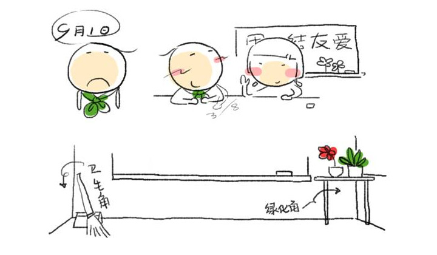
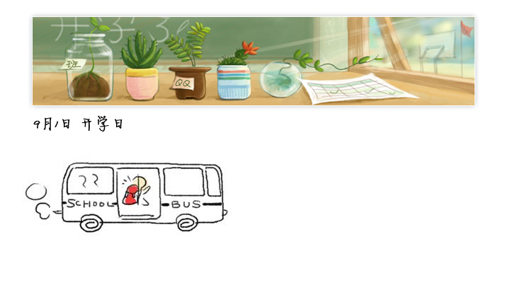
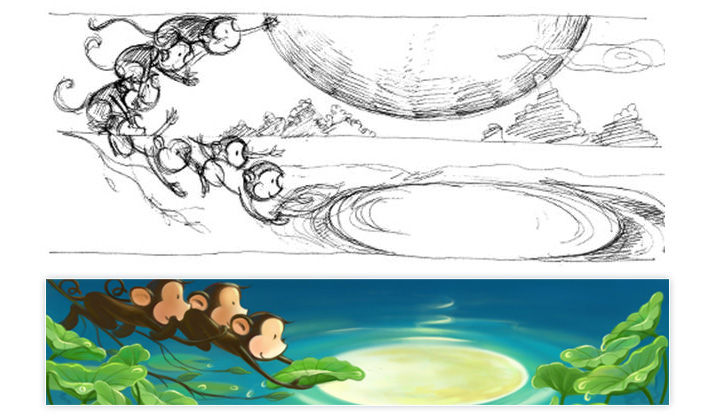
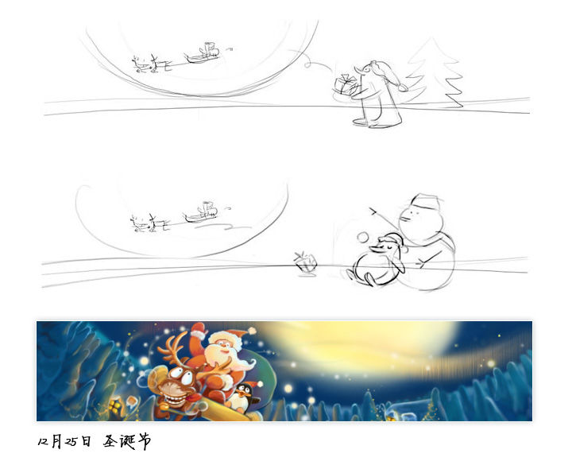
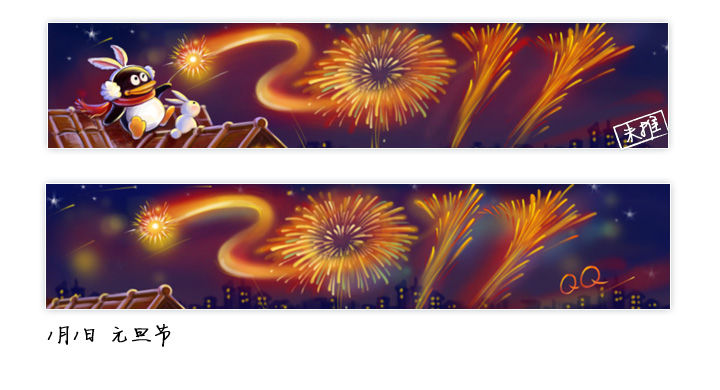
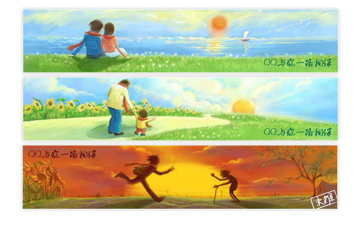
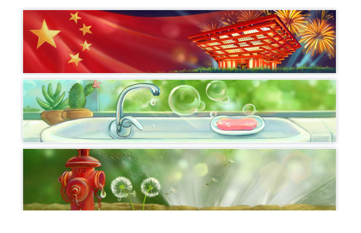
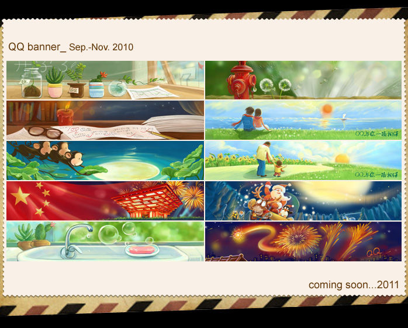

QQ登录banner再设计
http://cdc.tencent.com/?p=3495
QQ登录banner是与用户沟通情感的小窗口，在一些特殊的日子里我们尝试一些力所能及的表达方式来给用户一种感动，一种记忆。
QQ登录banner正力求避免直白的画面呈现，增强画面的趣味性、故事性，唤起用户共鸣，以幽默的方式带给用户愉悦的心情。
下面分类归纳一些节日banner的创作过程，通过记录一些设计过程中的反复与纠结，总结几点与大家共享。
http://hiphotos.baidu.com/hxzon/pic/item/c1d104080082eb9e63d98615.jpg
一. 避免低幼与直白的画面铺陈
【开学日】
九月一日开学，对于在校学生或是毕业许久的社会人士，都是痛并快乐的日子。普遍学子的情感，渡过漫长悠闲的假期后开学是件无奈的事；对已毕业许久的人来说，开学是学子时代的难忘记忆。
开学日，直接映入我们眼前的元素是黑板、操场、红领巾、文具等；常脱口而出的一句话是好好学习天天向上。打开图片搜索引擎，键入关键词开学，出现黑板报、教室、小朋友的笑脸的图片。低幼与富有童趣的画面表达仅限于一线之间。
开学日画面的大方向被设定为避免低幼与直白的画面铺陈，呈现积极向上的画面带来乐观情绪，并唤起儿时共鸣。
我们做了个小脑爆，并提取一些画面场景关键词：教室卫生角，绿化角，等校车；共鸣点：新学期同学见面，三八线，希望小学，布置教室等。最终，把画面定为教室后的绿化角场景，主要元素为同学们带来的绿化布置教室，同时以植物的郁郁葱葱带给积极向上的乐观情绪。

http://hiphotos.baidu.com/hxzon/pic/item/b05e0cd11faf139c562c8415.jpg
在绘制过程中，寻找一些教室、绿化、黑板报等摄影作品，从中吸取构图灵感与光线运用经验；从一些表达自然的插画作品中提取色彩表达的画面基调。
视觉稿产品评审过程中，不出意料遭到了一些挑战。问题主要集中于植物太多像植树节，各地域开学的习惯不同，开学元素太隐晦等。综合了我们的场景设定与脑暴的结果，产品提出的质疑，我们增加了黑板上开学了的文字，增强开学气氛。
画面中操场篮球架、红旗、黑板、课桌等元素，在换了视角后的教室一角的场景，以植物盆栽为主体景物的画面场景。开学第一天，同学们带来心爱的小盆栽布置教室，迎接新学期的到来。寓意生机勃勃的新学期和学生的健康成长。最重要的是带给大家充满希望与信心的情感，引导积极向上的乐观情绪。

http://hiphotos.baidu.com/hxzon/pic/item/a973f4d3285af090a8ec9a15.jpg
二. 择代表性景物烘托画面意境
【教师节】
开学后一周，迎来了九月十日教师节。同样是校园主题，这是一个歌颂老师神圣职业的节日。关于教师节的记忆画面也有很多。说在学生时代，每逢教师节同学们都自发组织，想送老师一份表达心意小小的礼物，记忆中有流行过自制贺卡、一朵康乃馨、一包巧克力、挂历一般是家长送等等。当然都免不了写下一句心里话，赞颂的话献给敬爱的老师祝福节日愉快。有把老师比作园丁、春雨润物细无声、歌颂老师无私的红烛精神等等佳句。
而“春蚕到死丝方尽，蜡炬成灰泪始干”无疑是歌颂老师最精炼、最有画面感的名句之一。

http://hiphotos.baidu.com/hxzon/pic/item/9c8617df289a6b5c62279815.jpg
锁定“红烛”作为代表性静物元素后，我们列出红烛元素应用于不同场景基调的区分：不同于灾难后的温馨祈福画面，不同于洞房花烛的浪漫画面，不同于聊斋志异中的神鬼氛围，不同于防患于未然的火灾教育知识普及。
在画面表达上把红烛的静物更多融入在深夜老师工作的场景，于是试卷、红笔、老式老花镜、书架、夜空的北斗星成了画面的辅助元素。
画面呈现深夜老师批改试卷的场景，桌上点燃着一支节日红烛。老师们无私奉献的红烛精神值得我们尊敬与赞颂。“春蚕到死丝方尽，蜡炬成灰泪始干”!
http://hiphotos.baidu.com/hxzon/pic/item/62468c13e051839ff6039e15.jpg
三. 场景性故事性与趣味性递进
【中秋节】
中秋佳节最受中国人重视的佳节之一，是中国传统节日。对于耳熟能详的中秋节典故我们可以如数家珍：嫦娥奔月、吴刚伐桂树、玉兔捣年糕、拜兔儿爷、朱元璋与月饼的由来等等。留意月饼包装盒面的插图，嫦娥、玉兔、满月等成为中秋节的默认画像，每逢中秋节看到这些画面成为一种习以为常的事。
习以为常在创作中，某种程度上是一件杯具的事情，没有了惊喜没有了激情。就在这些我们习以为常的元素中，怎么能出乎意料之外又符合情理之中，找出概念突破口呢？

http://hiphotos.baidu.com/hxzon/pic/item/a88d64d0727570c0a1ec9c15.jpg
我们在描写中秋的软文中翻江倒海，在经典的古诗句中陶冶情操：“但愿人长久,千里共婵娟”,“举头望明月,低头思故乡。“在美好的佳节给予祝福的同时，我们能否融入幽默的元素？
一个童年的寓言动画片引起我们的共鸣：“猴子捞月”——上海美术电影制片厂出品于1981年的动画片。
记忆中动画片里的小猴们生动活泼的身影仿佛就在眼前。当然联想到猴子捞月，也是处于当时动画形象与故事场景的魅力在我们幼小的心中烙下的深刻记忆。
感性过后，理性查阅“猴子捞月”的典故寓意的：典出《法苑珠林•愚戆篇•杂痴部》，用这则典故来告诫，如果庸人自扰，难免会招致灾祸。另外也有对于画面表达上，水中捞月一场空歧义的顾虑。
抱着尝试的心情，进行草图勾勒，尝试以小猴一家作为banner画面的主角，以“猴子捞月”的场景赋予新的中秋祝愿的美好意味。制作期间，尝试加入荷塘月色的场景来烘托中秋佳节的节日气氛。完稿后，得到了产品的一致赞赏与认可，身边同事也纷纷表示喜爱有加。
避免直白的画面陈述，融入故事性与趣味性的概念突破，我们渐入佳境。

http://hiphotos.baidu.com/hxzon/pic/item/3ca9978f279ae9b5503d9215.jpg
画面定格在猴子一家团圆赏月，小猴手捧荷叶捞月的场景，以荷塘月色的环境衬托中秋佳节。选择猴子捞月的画面，增加场景的趣味性与故事感，唤起儿时的美好回忆。中秋将即，画面隐喻家庭团圆共享明月的美好祝愿。
发布前尚有几日的空闲之余，我们进一步对画面进行动画尝试，让画面中有微波涟漪的flash动态的微妙效果。但不对用户登录中造成干扰。
【圣诞节】
12月25是一年一度的圣诞节，是西方国家一年中最盛大的节日，可以和新年相提并论，似我国过春节。
草图YY了许多以企鹅为主角的故事场景，例如企鹅在南极收到了圣诞老人的礼物；一直坚信有圣诞老人存在的企鹅守望天空睡着了，只有雪人有幸目睹了圣诞老人的尊容。最终选择了圣诞老人的方案，以驯鹿车冲出画面的构图增强视觉冲击力。 画面抓取圣诞老人带着节日礼物，驾着驯鹿雪橇飞驰而来的一刻，身边坐着企鹅面带惊喜，欢呼雀跃。
背景描绘积雪覆盖的圣诞树林，温暖的小屋亮着节日的彩灯，来烘托圣诞节日的欢乐气氛。
http://hiphotos.baidu.com/hxzon/pic/item/6b460efad84bc7d858ee9015.jpg
【元旦】
公历的1月1日是元旦节，也被称为“新年”。
元旦节过程稿是这样构思的：QQ手拿“仙女棒”在夜空中划过，随即燃起2011字样的节日礼花。小兔目不转睛地端坐在屋顶上，被空中绚烂的烟花吸引，寓意2011新年的到来。画面的主要人物角色遭到产品的挑战，几经讨论，思考归纳人物被砍的纠结点有三：一，在屋顶上燃放烟花爆竹，场景有待商确；二，画面元素过于复杂；三，兔子生肖用于元旦还是新年。
最终画面删去了企鹅与小兔的主角，把画面重心集中于夜空燃起盛开2011字样的烟花。表达人们庆祝元旦佳节的欢庆一刻，烘托新年的气氛。
http://hiphotos.baidu.com/hxzon/pic/item/9a972097d298dc2254fb9615.jpg
【温情banner】
 http://hiphotos.baidu.com/hxzon/pic/item/92443b6dd88d53b442169415.jpg
在公司成立12周年之际，接到QQ“温情banner”的需求。以“QQ与你一路相伴”为主题，带给用户一丝别样的温暖。最终选定三个用户年龄段发生的故事：恋人、小孩、老人：
恋人——画面描绘一对情侣相依在草地上面向大海看日出的场景，海上一轮朝阳冉冉升起。情侣的影子在草地上形成QQ的形状，寓意着因为QQ，我们在一起。
小孩——画面描绘小孩如同企鹅学步般，在父亲的搀扶下迈出欣喜的脚步。寓意着QQ伴随着我们每一步的成长，突出QQ与你一路相伴的主题。
老人（未推）——画面呈现夕阳下，游子奔向背已驼的老母亲。在异乡求学的学子与亲人间的联系，QQ与你一路相伴。
【其他节日banner】
 http://hiphotos.baidu.com/hxzon/pic/item/9e51b4fbcc608c6d4e4aea15.jpg
带着愉悦的心情总结过往节日banner的设计过程，也发现了些许不足之处。画面表达上，出现人物角色后略显复杂。表达节日气氛的笔墨更需精确拿捏，简洁大气还是主流王道。
画面内容构思，节日banner不仅仅是直白的节日提醒，我们正在默默努力，一步一步创新。敬请期待2011年的节日登录banner，感谢阅读：）

http://hiphotos.baidu.com/hxzon/pic/item/88bc6b22de3cc1eb4723e815.jpg